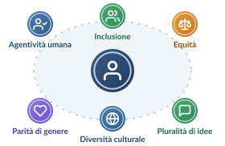

UNESCO · Miao, F., & Holmes, W. (ed. italiana 2026; ed. originale 2023) doi: 10.54675/FYTY9118Guida all’IA generativa nell’istruzione e nella ricerca (Guidance for generative AI in education and research). ISBN 978-92-3-000282-4 · unesdoc.unesco.org
Verso un approccio antropocentrico alla GenAI

100 milioniutenti attivi mensili di ChatGPT a gennaio 2023
1 Paesecon una normativa sull’IA generativa a luglio 2023
La prima guida globale UNESCO sulla GenAI nell’istruzione
Cap. 2 · otto controversie
I rischi da conoscere
Povertà digitale, contenuti usati senza consenso, modelli opachi, web «inquinato», meno pluralità di opinioni, deepfake.
Cap. 3 · sette fasi per i governi
Regolamentare la GenAI
Obbligo di proteggere la privacy dei dati e età minima per l’uso autonomo: almeno 13 anni. Requisiti anche per fornitori e utenti.
Cap. 4 · otto misure di policy
Un quadro politico
Inclusione ed equità, agentività umana, validazione dei sistemi, competenze di studenti e docenti, pluralità di idee, sguardo a lungo termine.
Cap. 5 · co-progettazione
L’uso creativo in classe
Approccio «antropocentrico e pedagogicamente appropriato»: ricerca, insegnamento, tutor 1:1, progetti, bisogni educativi speciali.